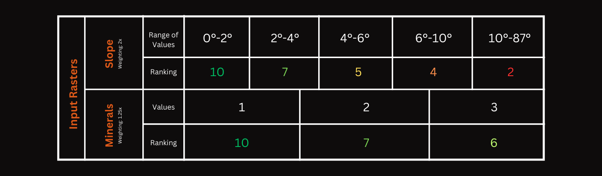

|
To the left is a 3D visualization of Mars created using publicly available data from K. L Tanaka et. al. To get a better view, it's recommended to click "i" and select "Open Scene in a New Tab". Clicking on each colored region will show information about that area's geologic and topographic features. For this project, I was most interested in craters (the yellow regions) and deltas (depicted by thin blue lines for waterflow). While this visualization does not provide data on Jezero Crater, it can be useful to understand the general topography of Mars. |
My process broke down into three steps: Data Gathering, Data Preparation, and Suitability Modeling
Data Gathering
First, I had to read scientific papers to understand what conditions indicate presence of life on Mars. Then, I narrowed down the criteria for this project to three variables: slope, carbonate presence, and hydrated silicate presence. In addition, I focused specifically on Jezero Crater because it had the most available data. I chose to focus on slope because it helps determine which areas are feasible for rovers to traverse. Slopes of higher than about 10° tend to be less feasible, so I narrowed my suitability range to include only flatter areas of land in Jezero Crater. Next, I focused on carbonate presence and hydrated silicate presence because carbon and water are two of the most essential building blocks for life. Thus, a location with both carbonates and hydrated minerals would be an ideal place to search. Using Astropedia and Mars Treks I looked for available data on the Jezero Crater region.
Data Preparation
After gathering my data, I imported each of the three datasets (a DEM, carbonate raster data, and hydrated silicates raster data) into ArcGIS. Using the slope function, I derived a slope raster from the DEM which could be used in a site suitability analysis. Working with both mineral datasets, however, was a bit more complicated. Since both the carbonate and silicate data were multiband rasters, I could not directly input them into a suitability modeler, as the software would not be able to distinguish which areas had minerals present. Thus, I manually created polygons around each area where I could see minerals present for each of the datasets (by referring to the bands) and turned those polygons into two feature classes, one for the carbonate data and one for the silicate data.
What next?
The most suitable location to find life on Mars would have both carbonates and silicates present in the same area. So, I created a buffer of about 100m around each polygon, and added a field in each feature class that noted whether each polygon described carbonate or silicate presence. After that, I performed a union to join both classes into one feature class. In the attribute table of the new feature class I added a new field called "Ranking" where each row in the attribute table would be ranked on a scale of 1-3 based on their suitability. With the help of the "calculate field" tool, I assigned rows with both carbonates and silicates present with a ranking of 1, rows with carbonates but no silicates present were ranked 2, and those with silicates but no carbonates were ranked as a 3. I chose to prioritize the presence of carbonates over silicates because Jezero Crater is already proximate to water in the form of a delta. Finally, using the "ranking" field as the cell value, I was able to convert the feature class into a raster and input it into my suitability model.
Suitability Modeling
I created a new suitability model in ArcGIS and inputted the slope raster as well the combined mineral raster. Then, I decided on weightings and criteria for each type of data. For the slope data, I used a range of classes to favor slopes between 0-10° and for the combined mineral raster I used unique values to assign suitability to ranking numbers 1, 2, and 3. In addition, I weighted the mineral data higher than the slope data because it was more important to me that both locations had the correct mineral composition, as opposed to being easy to access. The table of classes and criteria from ArcGIS is shown below. After running the model, I used the locate function to select two areas that proved the most suitable for life in Jezero Crater. The results of this analysis are shown on the map.

The Final Product!
After all the data analysis, I produced the map to the left that depicts the two most suitable locations for finding signs of life in Jezero Crater. The blue site was about 10,291 km² in area and the purple site was about 10,007 km² in area. Since the purple site is slightly blocked off by the delta, it might be easier for a rover to visit the blue site by landing at the bottom of the crater. The purple site could be an optimal location if a rover were to land on the north side of the crater on the other side of the delta.
